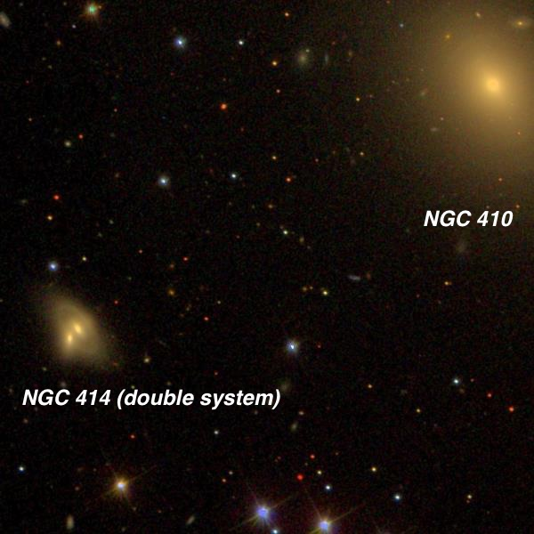
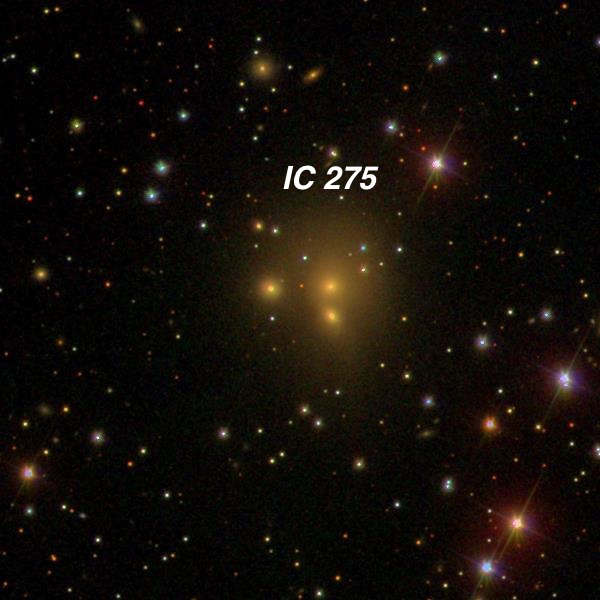
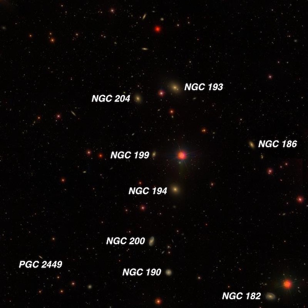
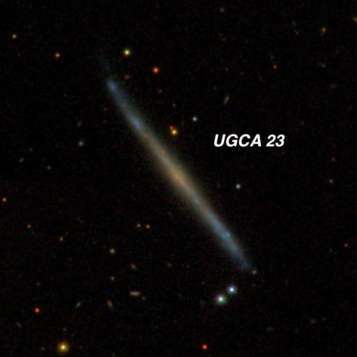
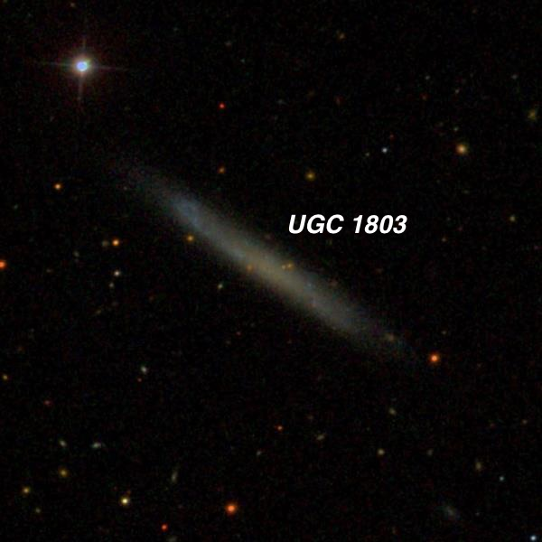
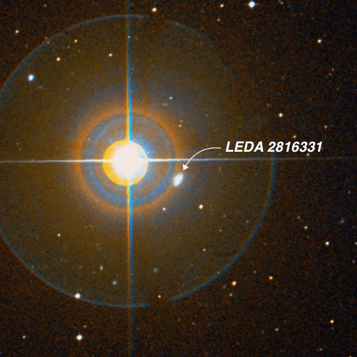
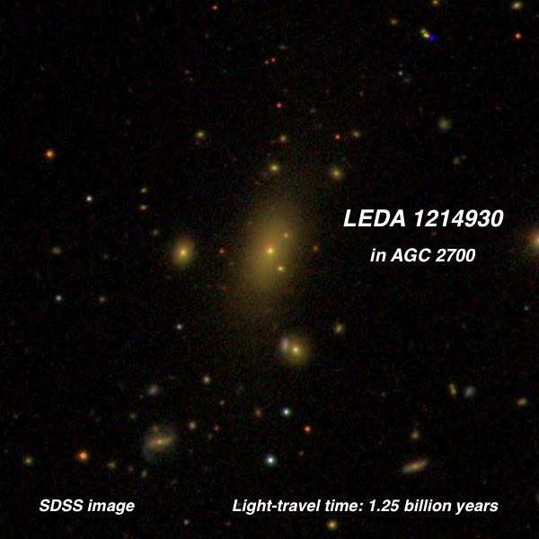
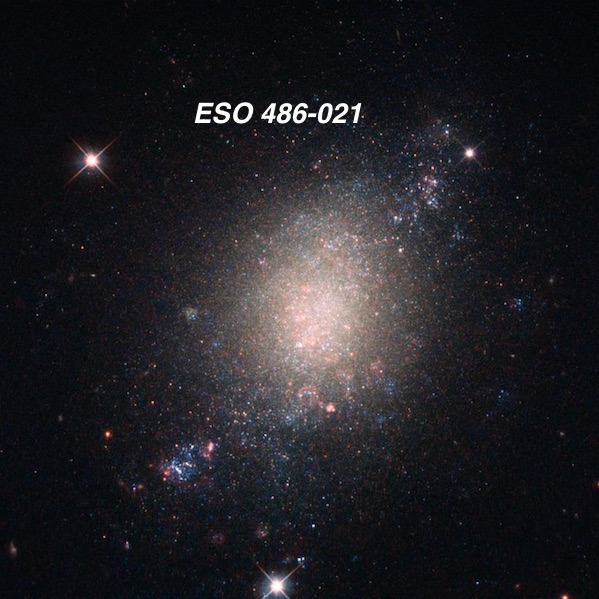
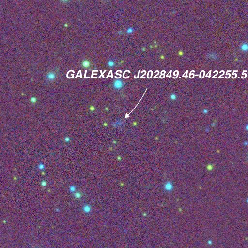

Winter Observing At Lake Sonoma
OR: Winter Observing at Lake Sonoma. by Steve Gottlieb
With dry conditions in California throughout December I was able to observe several times at Lake Sonoma, in the rural Sonoma County wine region (blue/green light-pollution zone). On Wednesday December 20, I met with Bob Douglas, Carter Scholz and Dan Smiley. Bob brought along his 28-inch f/3.6 Starstructure, Carter his homemade 16-inch, Dan observed with a TeleVue APO TV-76 and I used my 24-inch f/3.7. The night before a brief weather disturbance passed through the San Francisco bay area, but the clouds cleared out by Wednesday morning so conditions looked very promising, though turbulent seeing was predicted.
When I arrived at the observing lot before sunset, it was quite chilly due to a breeze (for a Californian!) with temps in the 40's. The moon set less than 30 minutes after astronomical twilight ended and the very thin crescent was not an issue as far as exploring the sky. Fortunately the breeze died down but temps did drop into the mid-30's by midnight, brrrr! Fortunately, the seeing turned out just fine, with stars looking sharp at 375x. And skies were dark and transparent (SQM-L reading of 21.3 on my meter, which is hard to beat from a site 80 miles from San Francisco.
I ended up logging 33 objects along with 44 more a few days earlier. Here are a few of my favorites. Most of these labeled images are courtesy of the Sloan Digital Sky Survey (SDSS), unless stated otherwise.
— Steve Gottlieb

NGC 414 01 11 17.6 +33 06 48 V = 13.5; Size 0.7'x0.4'; Surf Br = 12.0; PA = 23°
On first glance NGC 414 appeared moderately bright, fairly small, elongated 21"x14" NW-SE with a very faint halo extending SW-NE. You can see from this SDSS image that NGC 414 is a merged double system with twin nuclei NW-SE. But the nuclei are separated by only ~7”, so they’re very challenging to resolve visually. I suspected the galaxy to be double at 375x and it was definitely "resolved" using 500x. The brighter northwest nucleus (higher surface brightness) was ~6" diameter and appeared more centered in the halo. The southeast nucleus (~5" diameter) was nearly attached as a round, tiny "bulge" or knot.

IC 275 = V Zw 309 = PGC 11388/11389/11390 03 00 57.3 +44 20 54 Size 0.5'x0.5'
IC 275 is a triple system with the two closer components (IC 275 NED1 and NED2) separated by 15" N-S. Using 375x I found a faint, fairly small glow that was roundish, ~24" diameter, low irregular surface brightness. I was confident that 2 or 3 extremely faint stellar or quasi-stellar nuclei were glimpsed and made a diagram of the orientation. Checking the SDSS at home, my diagram matched the pair of galaxies oriented north-south in this image, along with a nearby mag 15.8 star. I apparently missed IC 275 NED3, which is 30" east of NED2 and probably the faintest of the trio.

NGC 182 /200 Group = LGG 9 in Pisces 00 39 09 +02 53.0
A total of 15 members were logged within a 1.1 degree circle including NGCs 182, 186, 193, 194, 198, 199, 200, 202, 203, 204 and 208! Although the galaxies are too faint to see much in terms of structure, This is an excellent group for 12-inch and larger scopes with a number of relatively easy galaxies.

UGCA 23 = FGC 231 = PGC 7806 02 03 02.2 -09 39 20 Size 2.8'x0.2'; PA = 37d
UGCA 23 is an extremely thin, ghostly edge-on ~8:1 SW-NE, ~1.25’x0.15’ with a very low but irregular surface brightness. A mag 15.8 star is just south of the southwest end [1.5' SSW of center]. I guess I missed the second star off the south end. This SDSS image reveals an extremely flat galaxy (though slightly curved at the tips) with blue patchy extensions and a more uniform yellow central region and indistinct nucleus.

UGC 1803 = MCG +01-07-002 = CGCG 414-003 = FGC 278 = PGC 8913 02 20 29.3 +06 48 39 Size 2.4'x0.3'; PA = 56d
UGC 1803 is another low surface brightness flat galaxy. Visually I found a very faint narrow streak southwest-northeast with an even surface brightness and no core [verified on this SDSS image]. The dimensions are roughly ~45"x12". A mag 13 star is 2' NE of center.

LEDA 2816331 = IRAS F02426-1847 02 44 57.7 -18 35 04 Size 0.5'x0.3'; PA = 139d
This galaxy is situated only 2' WSW of mag 4.5 Tau 1 Eridani! At 375x it appeared fairly faint, small, slightly elongated NW-SE, ~0.4'x0.3', relatively high surface brightness, occasional stellar nucleus. The galaxy was noticed immediately even at 94x, but the view was significantly improved used a 6mm Zeiss and planting the bright star just off the edge of field. This hidden galaxy seemed roughly 14th magnitude.

LEDA 1214930 = 2MASX J00034964+0203594 00 03 49.7 +02 03 59 V = 14.9; Size 0.8'x0.5'; PA = 158d
For a journey into really deep space, this galaxy resides at a redshift of z = .095 — implying the photons my eye captured have been flying towards earth for the past 1.25 billion years! There’s not much to report on visually, but it was amazing to just ponder the journey those few photons traveled. I logged it as extremely faint (visible roughly 1/3 of the time) and small, round, ~12" diameter. This galaxy is the cD (cluster dominant elliptical) member of Abell Galaxy Cluster 2700 and has grown to its present size by capturing nearby companions that ventured too close. LEDA 1214930 is located 16' ESE of mag 7.3 HD 225028 (very wide unequal double) and 2.6' E of a mag 11.2 star.

ESO 486-021 = AM 0501-252 05 03 19.7 -25 25 22 Size 1.2'x0.8'; PA = 108d
This relatively nearby galaxy (~30 million l.y.) in Lepus was observed by the HST during the Legacy ExtraGalactic UV Survey (LEGUS) of 50 nearby star-forming galaxies. ESO 486-21 was included in the survey as it is experiencing a burst of star formation (pink knots in the image). See https://www.spacetelescope.org/assets/potw1725a/ for more. Visually, this starburst galaxy appeared fairly faint, slightly elongated, 30"x25", low but irregular surface brightness. Situated within a group of stars and 2' NNE of a mag 10.8 star.

GALEXASC J202849.46-042255.5 (host of a faint supernova) 20 28 50s -04° 22' 57"
Supernova 2017ivv (=ASASSN-17qp) was discovered just a week ago (Dec 12th) by the All Sky Automated Survey for SuperNovae (astronomy.ohio-state.edu/~assassin/index.shtml). The host galaxy is so obscure it's not even catalogued in HyperLEDA or the NASA Extragalactic Database (NED). The only designation I could find is the Ultraviolet reference GALEXASC J202849.46-042255.5. Even on this PanSTARRS image the galaxy is a dim smudge. Visually at 225x and 375x the supernova was seen as a mag 14.5 "star" at the indicated position, but there no sign of an associated galaxy. This supernova is in Aquila and was quite low near the western horizon at the time of the observation.